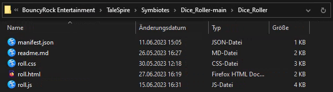

Symbiotes are our first supported way of modding, allowing you, the community, to make character sheets, fancy dice rollers, hand-out notes, and so much more!
Thanks to the API, these Symbiotes can load data directly from the game enabling tight integrations. Additionally, you can load regular websites if you prefer, to just use your favorite online resource without having to Alt+Tab out all the time.
(Alternative Video Guide)
To use Symbiotes they first need to be activated in the settings:

This activates the Symbiote side panel to be opened on the right edge of the screen:

Clicking on this opens the Symbiotes panel. In the beginning there are no Symbiotes installed and you'll see a message with a button to "open community mod browser". Pressing on that button will open said mod browser where you can find and install Symbiotes with one click. Keep in mind that this is installing user made mods and it's always worth to remember that doing so means running code from unknown people which can come with risks! Usually you'll be fine, especially if you stick to popular projects, but there is always a small but non-zero chance of things going wrong.
If you've received or downloaded a Symbiote zip from somewhere else, you can install that manually by either clicking on the "Open Symbiotes Directory" button below the previously mentioned "Open Community Mod Browser" button, or go to the Symbiote settings and press the "Open Symbiotes Directory" button there. This opens the directory where you can put the Symbiote you received. To install you'll have to unzip the Symbiote and then move it into this directory. Make sure that the "manifest.json" file is directly in the first subdirectory - for example when downloading from GitHub there will be an additional folder in the zip that needs to be removed:
In this example the "Dice_Roller-main" folder is too much and has to be removed so that the "Dice_Roller" folder is in the Symbiotes directory directly.
In this example the "Dice_Roller" folder contains the "manifest.json" directly, which is correct.
Once you've moved the Symbiotes you want to use into the appropriate folder they should show up in the Symbiote side panel where they can be opened and then used.